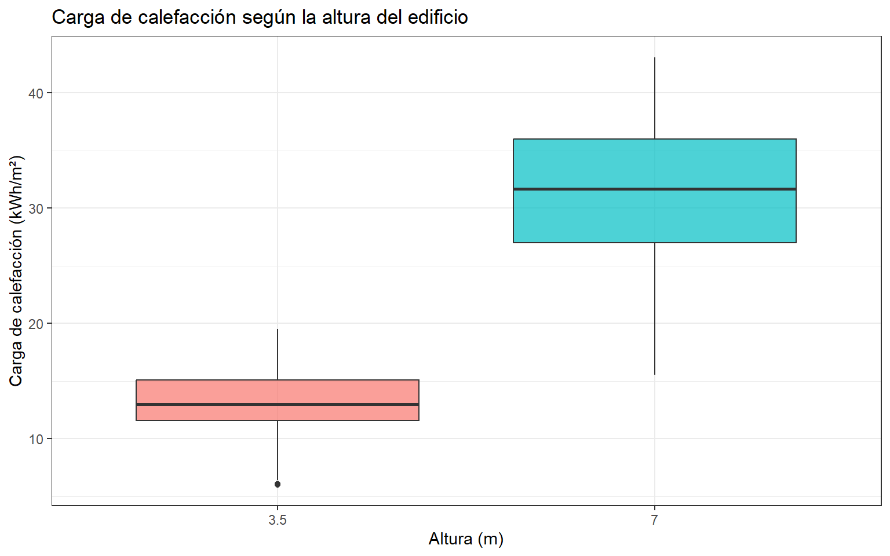
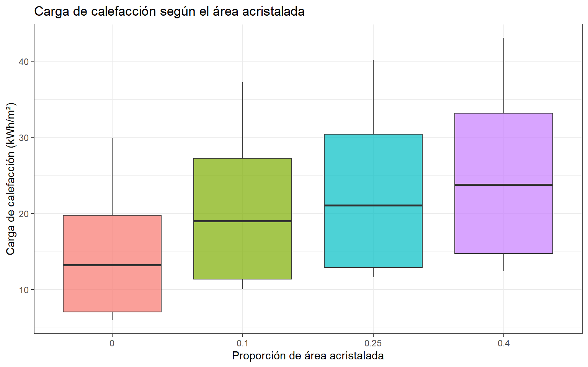

Chapter 5 Estadística paramétrica y no paramétrica
5.1 Comparación de dos grupos independientes: un piso vs. dos pisos
Queremos saber si la carga de calefacción media es distinta según la altura del edificio.
- \(H_0\): la carga media de calefacción es igual en edificios de 3.5 m y de 7 m.
- \(H_1\): las cargas medias son diferentes.
df_alt <- df %>% mutate(altura = factor(altura))
df_alt %>%
ggplot(aes(x = altura, y = carga_calef, fill = altura)) +
geom_boxplot(alpha = 0.7) +
labs(x = "Altura (m)", y = "Carga de calefacción (kWh/m²)",
title = "Carga de calefacción según la altura del edificio") +
theme_bw() +
theme(legend.position = "none")
Supuesto de normalidad por grupo
df_alt %>%
group_by(altura) %>%
summarise(estadistico = shapiro.test(carga_calef)$statistic,
p_valor = shapiro.test(carga_calef)$p.value)## # A tibble: 2 × 3
## altura estadistico p_valor
## <fct> <dbl> <dbl>
## 1 3.5 0.977 0.00000778
## 2 7 0.981 0.0000483Interpretación: en ambos grupos el p-valor es menor que 0.05, así que los datos no siguen una distribución normal. Con 384 edificios por grupo, la prueba t sigue siendo bastante confiable (por el teorema del límite central), pero conviene confirmar con la prueba no paramétrica.
Supuesto de igualdad de varianzas
## Levene's Test for Homogeneity of Variance (center = "median")
## Df F value Pr(>F)
## group 1 203.86 < 2.2e-16 ***
## 766
## ---
## Signif. codes: 0 '***' 0.001 '**' 0.01 '*' 0.05 '.' 0.1 ' ' 1Interpretación: el p-valor es prácticamente cero, así que las varianzas no son iguales. Basta ver el boxplot: los edificios de dos pisos tienen una dispersión mucho mayor (ds = 5.95) que los de un piso (ds = 2.67). Por eso usamos la versión de Welch (var.equal = FALSE).
un_piso <- df$carga_calef[df$altura == 3.5]
dos_pisos <- df$carga_calef[df$altura == 7]
t.test(un_piso,
dos_pisos,
var.equal = FALSE,
paired = FALSE)##
## Welch Two Sample t-test
##
## data: un_piso and dos_pisos
## t = -53.857, df = 531.21, p-value < 2.2e-16
## alternative hypothesis: true difference in means is not equal to 0
## 95 percent confidence interval:
## -18.59165 -17.28311
## sample estimates:
## mean of x mean of y
## 13.33851 31.27589Interpretación: con t = −53.86 y un p-valor prácticamente cero, se rechaza \(H_0\). Los edificios de dos pisos necesitan, en promedio, unos 17.94 kWh/m² más de calefacción que los de un piso.
##
## Cohen's d
##
## d estimate: -3.886803 (large)
## 95 percent confidence interval:
## lower upper
## -4.127579 -3.646027Interpretación: el tamaño del efecto es enorme (d ≈ -3.89, magnitud large). Las medias están separadas por casi cuatro desviaciones estándar, así que la diferencia no solo es estadísticamente significativa, sino que en la práctica es gigantesca.
Confirmación no paramétrica (Wilcoxon / Mann-Whitney)
## # A tibble: 1 × 7
## .y. group1 group2 n1 n2 statistic p
## * <chr> <chr> <chr> <int> <int> <dbl> <dbl>
## 1 carga_calef 3.5 7 384 384 404 9.46e-126## # A tibble: 1 × 7
## .y. group1 group2 effsize n1 n2 magnitude
## * <chr> <chr> <chr> <dbl> <int> <int> <ord>
## 1 carga_calef 3.5 7 0.861 384 384 largeInterpretación: la prueba de rangos llega a la misma conclusión (p-valor prácticamente cero), con un tamaño del efecto r = 0.86, que se considera grande. La conclusión no depende del supuesto de normalidad: la altura cambia muchísimo la carga de calefacción.
5.2 Comparación de dos grupos pareados: calefacción vs. refrigeración
Cada edificio tiene dos mediciones: su carga de calefacción y su carga de refrigeración. Como son del mismo edificio, son datos pareados.
- \(H_0\): la diferencia media entre carga de refrigeración y de calefacción es cero.
- \(H_1\): la diferencia media es distinta de cero.
##
## Shapiro-Wilk normality test
##
## data: df$carga_calef
## W = 0.9121, p-value < 2.2e-16##
## Shapiro-Wilk normality test
##
## data: df$carga_refri
## W = 0.90904, p-value < 2.2e-16Interpretación: ninguna de las dos cargas es normal (p < 0.001), lo cual cuadra con la forma bimodal que vimos en el EDA.
##
## Paired t-test
##
## data: df$carga_refri and df$carga_calef
## t = 28.358, df = 767, p-value < 2.2e-16
## alternative hypothesis: true mean difference is not equal to 0
## 95 percent confidence interval:
## 2.122696 2.438434
## sample estimates:
## mean difference
## 2.280565Interpretación: con t = 28.36 y p-valor prácticamente cero, se rechaza \(H_0\). En promedio, un edificio necesita 2.28 kWh/m² más para enfriarse que para calentarse. El intervalo de confianza no incluye el cero, lo que refuerza la conclusión.
##
## Cohen's d
##
## d estimate: 0.2248362 (small)
## 95 percent confidence interval:
## lower upper
## 0.2090892 0.2405833Interpretación: el tamaño del efecto es d ≈ 0.22 (magnitud small). La diferencia de 2.28 kWh/m² parece modesta al lado de lo mucho que varían las cargas entre edificios. Lo que la hace tan clara es que casi todos los edificios muestran el mismo patrón (refrigeración algo mayor que calefacción), y por eso la prueba pareada la detecta con mucha seguridad.
df_par <- df %>%
mutate(id = row_number()) %>%
dplyr::select(id, carga_calef, carga_refri) %>%
pivot_longer(cols = c(carga_calef, carga_refri),
names_to = "tipo_carga",
values_to = "carga")
df_par %>%
rstatix::wilcox_test(carga ~ tipo_carga, paired = TRUE)## # A tibble: 1 × 7
## .y. group1 group2 n1 n2 statistic p
## * <chr> <chr> <chr> <int> <int> <dbl> <dbl>
## 1 carga carga_calef carga_refri 768 768 22841 2.33e-91## # A tibble: 1 × 7
## .y. group1 group2 effsize n1 n2 magnitude
## * <chr> <chr> <chr> <dbl> <int> <int> <ord>
## 1 carga carga_calef carga_refri 0.732 768 768 largeInterpretación: la prueba de rangos con signo confirma la diferencia (p-valor prácticamente cero), con un tamaño del efecto r = 0.73. Es decir, la refrigeración supera a la calefacción en la gran mayoría de edificios, de forma consistente.
5.3 ANOVA: ¿cambia la carga según la cantidad de ventanas?
La variable area_vidrio tiene cuatro niveles (0 %, 10 %, 25 % y 40 % del área acristalada).
- \(H_0\): la carga media de calefacción es igual en los cuatro niveles de área acristalada.
- \(H_1\): al menos un nivel tiene una media diferente.
df_vid <- df %>% mutate(area_vidrio = factor(area_vidrio))
df_vid %>%
group_by(area_vidrio) %>%
summarise(n = length(carga_calef),
media = mean(carga_calef),
ds = sd(carga_calef))## # A tibble: 4 × 4
## area_vidrio n media ds
## <fct> <int> <dbl> <dbl>
## 1 0 48 14.3 7.63
## 2 0.1 240 20.4 9.07
## 3 0.25 240 22.8 9.87
## 4 0.4 240 25.4 10.4df_vid %>%
ggplot(aes(x = area_vidrio, y = carga_calef, fill = area_vidrio)) +
geom_boxplot(alpha = 0.7) +
labs(x = "Proporción de área acristalada", y = "Carga de calefacción (kWh/m²)",
title = "Carga de calefacción según el área acristalada") +
theme_bw() +
theme(legend.position = "none")
Interpretación: la carga media sube de forma escalonada a medida que hay más vidrio: 14.29 sin ventanas, 20.36 con 10 %, 22.76 con 25 % y 25.41 kWh/m² con 40 %. Tiene sentido físico, porque el vidrio aísla peor que un muro y por las ventanas se escapa más calor.
## Df Sum Sq Mean Sq F value Pr(>F)
## area_vidrio 3 6362 2120.7 22.59 5.09e-14 ***
## Residuals 764 71728 93.9
## ---
## Signif. codes: 0 '***' 0.001 '**' 0.01 '*' 0.05 '.' 0.1 ' ' 1Interpretación: con F = 22.59 y p-valor ≈ 5 × 10⁻¹⁴, se rechaza \(H_0\): la cantidad de ventanas sí cambia la carga de calefacción media. Ahora hay que revisar los supuestos y ver qué grupos difieren entre sí.
df_vid %>%
group_by(area_vidrio) %>%
summarise(n = length(carga_calef),
estsw = shapiro.test(carga_calef)$statistic,
p_sw = shapiro.test(carga_calef)$p.value)## # A tibble: 4 × 4
## area_vidrio n estsw p_sw
## <fct> <int> <dbl> <dbl>
## 1 0 48 0.882 1.72e- 4
## 2 0.1 240 0.865 9.94e-14
## 3 0.25 240 0.852 2.07e-14
## 4 0.4 240 0.846 1.04e-14## Levene's Test for Homogeneity of Variance (center = median)
## Df F value Pr(>F)
## group 3 11.851 1.36e-07 ***
## 764
## ---
## Signif. codes: 0 '***' 0.001 '**' 0.01 '*' 0.05 '.' 0.1 ' ' 1Interpretación: ningún grupo es normal (todos los p-valores de Shapiro-Wilk son menores que 0.001), y la prueba de Levene también rechaza la igualdad de varianzas (p < 0.001). Los supuestos del ANOVA no se cumplen, así que el resultado del ANOVA se toma como orientativo y la conclusión firme la dará Kruskal-Wallis.
## Tukey multiple comparisons of means
## 95% family-wise confidence level
##
## Fit: aov(formula = carga_calef ~ area_vidrio, data = df_vid)
##
## $area_vidrio
## diff lwr upr p adj
## 0.1-0 6.070792 2.1262865 10.015297 0.0004700
## 0.25-0 8.470542 4.5260365 12.415047 0.0000003
## 0.4-0 11.125292 7.1807865 15.069797 0.0000000
## 0.25-0.1 2.399750 0.1223889 4.677111 0.0343558
## 0.4-0.1 5.054500 2.7771389 7.331861 0.0000001
## 0.4-0.25 2.654750 0.3773889 4.932111 0.0147114Interpretación: todas las parejas de niveles son significativamente diferentes (p ajustado < 0.05). Las diferencias más grandes son contra los edificios sin ventanas: pasar de 0 % a 40 % de vidrio aumenta la carga media en unos 11.1 kWh/m². Incluso los saltos más pequeños (de 10 % a 25 % y de 25 % a 40 %, de unos 2.4 a 2.7 kWh/m²) alcanzan a ser significativos.
5.4 Kruskal-Wallis
Como no se cumplen normalidad ni homogeneidad de varianzas, usamos la alternativa no paramétrica.
- \(H_0\): las distribuciones de la carga de calefacción son iguales en los cuatro niveles de vidrio.
- \(H_1\): al menos un nivel difiere.
##
## Kruskal-Wallis rank sum test
##
## data: carga_calef by area_vidrio
## Kruskal-Wallis chi-squared = 83.336, df = 3, p-value < 2.2e-16Interpretación: con χ² = 83.34 y p-valor prácticamente cero, se rechaza \(H_0\). La conclusión del ANOVA se mantiene: el área acristalada influye en la carga de calefacción.
pairwise.wilcox.test(x = df_vid$carga_calef,
g = df_vid$area_vidrio,
exact = FALSE,
p.adjust.method = "bonferroni")##
## Pairwise comparisons using Wilcoxon rank sum test with continuity correction
##
## data: df_vid$carga_calef and df_vid$area_vidrio
##
## 0 0.1 0.25
## 0.1 4.3e-05 - -
## 0.25 6.4e-07 6.5e-05 -
## 0.4 1.8e-08 1.5e-10 7.0e-06
##
## P value adjustment method: bonferroniInterpretación: con la corrección de Bonferroni, todas las comparaciones por pares siguen siendo significativas. Cada aumento en la proporción de vidrio se traduce en una carga de calefacción mayor.
¿Y la orientación? Hagamos la misma pregunta con la orientación del edificio:
##
## Kruskal-Wallis rank sum test
##
## data: carga_calef by factor(orientacion)
## Kruskal-Wallis chi-squared = 0.07995, df = 3, p-value = 0.9941Interpretación: aquí ocurre lo contrario: con p = 0.994 no hay ninguna evidencia de que la orientación cambie la carga de calefacción. Da igual que el edificio mire al norte, al sur, al este o al oeste. Lo tendremos en cuenta en la regresión.